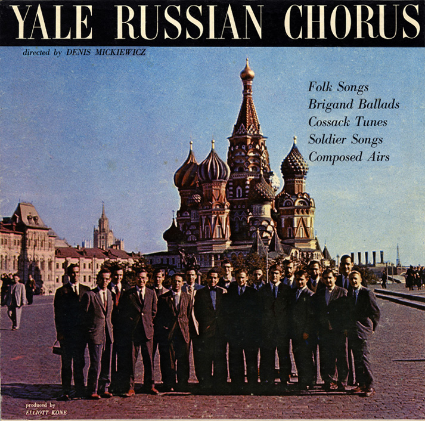
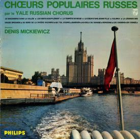
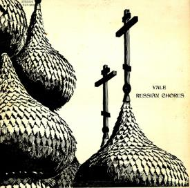
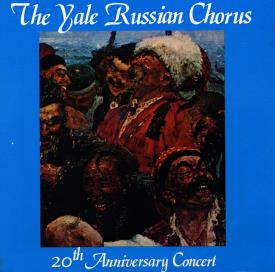
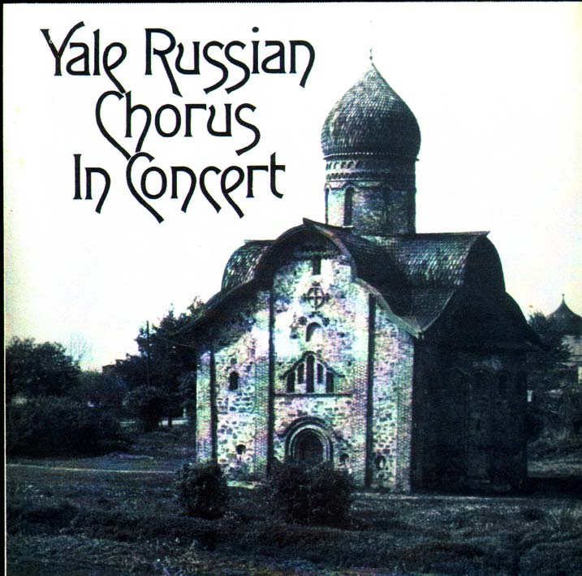
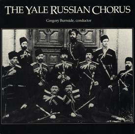
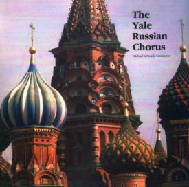

You've reached the home of the Yale Russian Chorus, North America's oldest Slavic choir. From Azerbaijan to the White House, from the Russian Steppes to Carnegie Hall -- and now on the internet! -- the Yale Russian Chorus has delighted audiences across the world for 63 years.







The YRC is currently holding auditions for the 2017-2018 season. Email yalerussianchorus@gmail.com to sign up! All tenors and basses welcome.
Upcoming Performances:
On September 23rd, the YRC will be joined by the Yale Russian Chorus Alumni Association and Yale Women's Slavic Chorus in an hour long performance in Battel Chapel. Find out more here!
On September 28th at 6:30pm, the YRC will perform in Sterling Memorial Library as part of a presentation on the hundredth-year anniversary of the October Revolution.